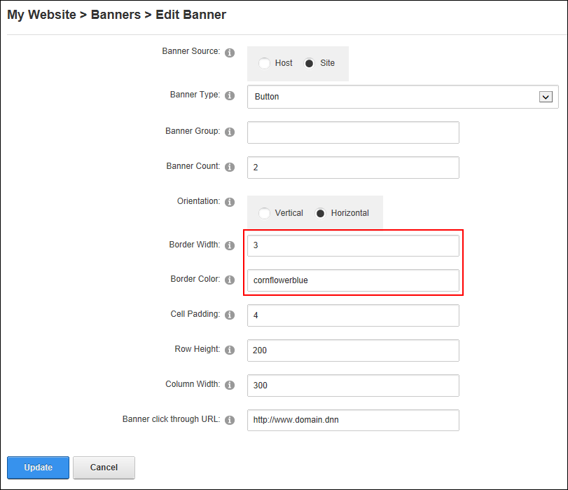

Setting the Banner Border
How to set the width and color of the border around each banner that is displayed in a banners module.
- Select
 Banner Options from the module actions menu.
Banner Options from the module actions menu.
- In the Border Width text box, enter the pixel width of the border. E.g. 3
- In the Border Color text box, enter a hex number (#6495ED) or color code (CornflowerBlue) to set the color of the border.

-
Click the OK button to confirm.
Tip: You may like to for the Display Container? field on the Module Settings for this module to hide the module container.
The Banners module with Borders displayed